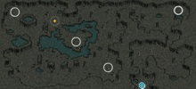

2014年11月25日アップデート

2014年11月25日 大型アップデートの変更内容一覧
ギルドリミット戦システムの追加
既存システム新機能追加
新規アイテム実装
ギルドリミット戦システムの追加
ブルンネンシュティグギルド戦 申込事務室のパルセナより、ギルド戦参加メンバーのレベルや人数を細かく設定したギルドリミット戦を申し込むことができます。
時間を決めて「対戦申込」ボタンを押すと、「レベル制限設定」「人数制限設定」のウィンドウが表示されます。
※注意※
・レベル制限設定は、左の最小レベルが右の最大レベルより小さくなるように入力しないと、設定できません。
・制限人数以上の人数が転送場所にいた場合、転送開始5分前に転送対象となるキャラクターの頭上に「赤い旗」のマークが表示され、転送されます。
転送可能時間中（約3分間）に対象キャラクターがログアウトしても、転送前にマークが表示されていなかったキャラクターは、転送されません。
・リミットギルド戦と通常のギルド戦の1週間の回数は、別でカウントされます。
同じ時間でなければ同日に申し込むことができます。
・リミットギルド戦のリセットされる時間は、毎週水曜日の午前6：00です。
1日の制限回数はありませんが、1週間に3回が上限回数となります。
・リミットギルド戦は、通常ワールドのみの先行導入です。
GVGアリーナへの導入時期は現在、未定となっています。
既存システム新機能追加
・ログインアラームOn/Off機能追加
システムメニュー>コミュニティーから、ギルドメンバーや友達登録しているキャラクターにログイン/ログアウトを通知しないように設定することができます。

・スキル特殊効果調整機能追加
システムメニュー>画面から、メテオシャワーなどの広範囲スキルのグラフィックの透明度を調整できるようになりました。

・ギルドマスター権限移譲機能追加
ポイント戦やギルド戦の申し込み権限を、副ギルドマスターやギルド元老に委譲できるようになりました。
ギルドウィンドウ>ギルド管理ツールから、ギルドマスターが「ギルドメンバー権限設定」を行うことができます。

・自己キャラクターへの支援スキル使用時の効率改善
HPバー/CPバーにカーソルを合わせて支援スキルを使用することで、自身に支援スキルをかけることができます。
.gif)
・「ベルセルク」称号残り使用回数表示
ベルセルク称号の情報ウィンドウに、「使用済み回数/使用可能最大数」が表示されるようになりました。

・クエスト関連モンスター「変異スパイダー」増量
ラカリフサ北の洞窟の変異スパイダー（メインクエスト5-3-1対象モンスター）の湧き数が、4箇所×3匹に増加しました。
 （109.11）（7.15）（69.83）（43.49）
新規アイテム実装
2013年9月12日〜10月14日に開催された東京コミュニケーションアート専門学校とのコラボレーション企画デザインコンテストで、魔法のカーペット部門の最優秀賞を獲得した「フラワードリーム」が実装されました。